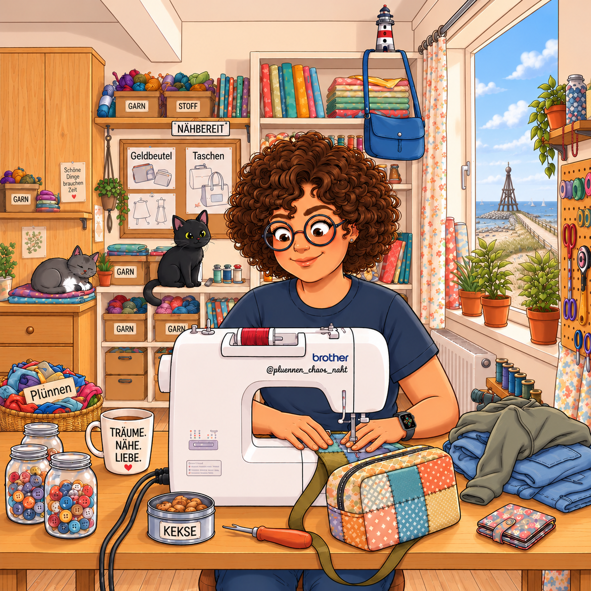

DIE MIT DEN IDEEN01
Die Chaos-Königin
Upcycling-Fan, Stoffretterin und immer für eine „Das kriege ich bestimmt noch hin“-Idee zu haben. Trennt mit Hingabe. Flucht nur ganz leise.
UpcyclingMut statt Maßband
NÄHZIMMER-NOTIZEN AUS DEM ECHTEN LEBEN
Die ehrliche Reise einer DIY-Anfängerin und ihrer treuen Nähmaschine Hermine. Hermine näht, ich trenne – das ist unsere Arbeitsteilung!

HERMINE & DIE CHAOS-CREW ♥01 / DAS TEAM
Zwei sehr unterschiedliche Talente. Ein gemeinsamer Garnsalat. Und erstaunlich viele Projekte, die am Ende doch irgendwie fertig werden.
Upcycling-Fan, Stoffretterin und immer für eine „Das kriege ich bestimmt noch hin“-Idee zu haben. Trennt mit Hingabe. Flucht nur ganz leise.
Brother Innov-is F410. Kann Knopflöcher, Zierstiche und vermutlich auch Gedanken lesen. Verzweifelt regelmäßig an meiner Fadenspannung.
02 / HERMINE HÄLT PROTOKOLL
Beweisstücke aus dem Nähzimmer. Alle Geschichten wahr, manche Nähte gerade.
Fehlercode 01. Ich schaue Hermine an. Hermine schaut zurück. Der Faden war’s. Natürlich.
Reel-Tagebuch öffnen ↗Der Plan war schnurgerade. Die Naht hatte andere Pläne. Nennen wir es: handgemachte Freiheit.
Reel-Tagebuch öffnen ↗Keine Kekse. Dafür 47 Knöpfe, ein Gummiband ohne Geschichte und eine sehr gute Idee von gestern.
Reel-Tagebuch öffnen ↗Einmal falsch abgebogen, dreimal liebevoll zurück. Hermine näht. Ich trenne. Teamwork eben.
Reel-Tagebuch öffnen ↗◎ Für die einzelnen Einträge geht’s direkt zu den Reels auf Instagram.
03 / UPCYCLING MIT GESCHICHTE
Alte Lieblingsstücke? Schöne Fundstoffe? Stoffreste mit großem Auftrittspotenzial? Die dürfen hier alle noch mal glänzen.
Im Plünnen-Lager warten gerettete Kleidungsstücke, Pre-Loved-Fundstücke und die guten Reste auf ihr nächstes Kapitel. Nichts muss perfekt zusammenpassen – Hauptsache, es hat Charakter und bekommt eine zweite Runde.
Du magst Stoff, Schnickschnack und ein bisschen „Das war so nicht geplant“?
Dann bist du hier richtig ↗